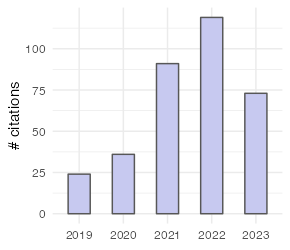

Khaipho-Burch, Merritt; Giri, Anju; Ramstein, Guillaume; Monier, Brandon; Romay, Maria Cinta; Buckler, Edward S (2022) Elucidating the patterns of pleiotropy and its biological relevance in maize. In preparation doi: NA
Sun, Xiaopeng; Xiang, Yanli; Dou, Nannan; Zhang, Hui; Pei, Surui; Valdes Franco, Jose A; Menon, Mitra; Monier, Brandon, Ferebee, Taylor; Liu Tao; Liu, Sanyang; Gao, Yuchi; Wang, Jubin; Terzaghi, William; Yan, Jianbing; Hearne, Sarah; Li, Lin; Li, Feng; Dai, Mingqiu (2022) Genomic basis of the trade-off between environmental adaptation and yield-related traits in maize. In preparation doi: NA
Monier, Brandon; Peta, Vincent; Mensah, Jerry; Bucking, Heike (2017) Inter-and intraspecific fungal diversity in the arbuscular mycorrhizal symbiosis. Mycorrhiza-Function, Diversity, State of the Art doi: https://doi.org/10.1007/978-3-319-53064-2_12
Bradbury, Peter; Casstevens, Terry; Jensen, Sarah E; Johnson, Lynn C; Miller, Zachary R; Monier, Brandon; Romay, Maria Cinta; Song, Baoxing; Buckler, Edward S (2021) The Practical Haplotype Graph, a platform for storing and using pangenomes for imputation. bioRxiv doi: https://doi.org/10.1101/2021.08.27.457652
Gage, Joseph L; Mali, Sujina; McLoughlin, Fionn; Khaipho-Burch, Merritt; Monier, Brandon; Bailey-Serres, Julia; Vierstra, Richard D; Buckler, Edward S (2021) Variation in upstream open reading frames contributes to allelic diversity in protein abundance. bioRxiv doi: https://doi.org/10.1101/2021.05.25.445499
Ferguson, John N; Fernandes, Samuel B; Monier, Brandon; Miller, Nathan D; Allen, Dylan; Dmitrieva, Anna; Schmuker, Peter; Lozano, Roberto; Valluru, Ravi; Buckler, Edward S; Gore, Michael A; Brown, Patrick J; Spalding, Edgar P; Leakey, Andrew DB (2021) Machine learning-enabled phenotyping for GWAS and TWAS of WUE traits in 869 field-grown sorghum accessions. Plant physiology doi: https://doi.org/10.1093/plphys/kiab346
Monier, Brandon; Casstevens, Terry M; Bradbury, Peter J; Buckler, Edward S (2021) rTASSEL: an R interface to TASSEL for association mapping of complex traits. bioRxiv doi: https://doi.org/10.1101/2020.07.21.209114
Gage, Joseph L; Monier, Brandon; Giri, Anju; Buckler, Edward S (2020) Ten years of the maize nested association mapping population: impact, limitations, and future directions. The Plant Cell doi: https://doi.org/10.1105/tpc.19.00951
Sethi, Prince; Narayana Gowda, Smitha; Motapothula, Uma; Baloun, Brett; Atiq, Muslim (2019) Use of lumen apposing metal stent for pyloric stenosis refractory to balloon dilatation. Journal of digestive diseases doi: https://doi.org/10.1111/1751-2980.12828
Monier, Brandon; McDermaid, Adam; Wang, Cankun; Zhao, Jing; Miller, Allison; Fennell, Anne; Ma, Qin (2019) IRIS-EDA: An integrated RNA-Seq interpretation system for gene expression data analysis. PLoS computational biology doi: https://doi.org/10.1371/journal.pcbi.1006792
McDermaid, Adam; Monier, Brandon; Zhao, Jing; Liu, Bingqiang; Ma, Qin (2019) Interpretation of differential gene expression results of RNA-seq data: review and integration. Briefings in bioinformatics doi: https://doi.org/10.1093/bib/bby067
Monier, Brandon; McDermaid, Adam; Zhao, Jing; Fennell, Anne; Ma, Qin (2018) IRIS-DGE: An integrated RNA-seq data analysis and interpretation system for differential gene expression. bioRxiv doi: https://doi.org/10.1101/283341
McDermaid, Adam; Monier, Brandon; Zhao, Jing; Ma, Qin (2018) ViDGER: An R package for integrative interpretation of differential gene expression results of RNA-seq data. bioRxiv doi: https://doi.org/10.1101/268896
Monier, Brandon (2018) Microbial communities and their impact on bioenergy crops in dynamic environments. NA doi: https://openprairie.sdstate.edu/etd/2659
Monier, Brandon (2013) The Analysis of Cytotypic Variation and Construction of a BAC Library of Midwestern Prairie Cordgrass (Spartina pectinata Link) Genotypes. NA doi: https://openprairie.sdstate.edu/etd/1624

| Metric | All | Since 2017 |
|---|---|---|
| Citations | 193 | 192 |
| h-index | 6 | 6 |
| i10-index | 5 | 5 |
Last Compiled: 2022-04-07